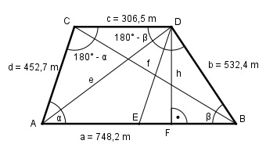

Aufgabe 153 Wie groß sind die Diagonalen e und f des Trapezes?

ED = d = 452,7 m (Parallele zu d) EB = a – c = 748,2 m - 306,5 m = 441,7 m Im Dreieck EBD: Fall SSS: Cosinussatz: d2 = EB2 + b2 + 2 * EB * b * cos β |+2*EB*b*cos β d2 + 2 * a * b * cos β = EB2 + b2 | -d2 2 * a * b * cos β = EB2 + b2 - d2 | :2 * EB * b EB2 + b2 - d2 cos β = --------------- = 2 * EB * b 441,72 + 532,42 - 452,72 = --------------------------- = 2 * 441,7 * 532,4 = 0,5818 --> β = 54,4° 180° - β = 180° - 54,4° = 125,6° Im Dreieck CBD: Fall SWS: f2 = b2 + c2 - 2 * b * c * cos 125,6° f2 = 532,42 + 306,52 - 2*532,4*306,5*(-0,5818) = = 567 269 |√ f = 753,2 m Im Dreieck ABC: Fall SSS: Cosinussatz: f2 = a2 + d2 + 2 * a * d * cos α |+2*a*d*cos α f2 + 2 * a * d * cos α = a2 + d2 | -f2 2 * a * d * cos α = a2 + d2 - f2 | :2 * a * d a2 + d2 - f2 cos α = -------------- = 2 * a * d 748,22 + 452,72 - 753,22 = --------------------------- = 2 * 748,2 * 452,7 = 0,2914 --> α = 73° 180° - α = 180° - 73° = 107° Im Dreieck ADC: Fall SWS: e2 = c2 + d2 - 2 * c * d * cos 107° e2 = 306,52 + 452,72 - 2*306,5*452,7*(-0,2914) = = 379 744,5 | e = 616,2 m